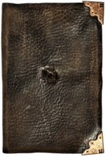

Artefatos Mágicos
Anel de Servolo Gaunt
O Anel de Servolo Gaunt é uma antiga relíquia da família Gaunt. Tom Riddle, mais tarde conhecido como Lord Voldemort, herdou o anel de seu avô, Servolo Gaunt, e o transformou em uma Horcrux após o assassinato de seu pai, Tom Riddle Sr. Para proteger sua Horcrux, Voldemort colocou uma poderosa maldição no anel, destinada a matar qualquer um que tentasse usá-lo ou destruí-lo.

Capa da Invisibilidade
A Capa da Invisibilidade é uma das três Relíquias da Morte. Diferente de outras capas de invisibilidade que perdem sua eficácia com o tempo, esta capa, dada ao terceiro irmão Peverell pela própria Morte, torna o usuário completamente invisível e é eficaz eternamente¹. A capa foi passada de geração em geração até chegar a Harry Potter, que a usou em várias ocasiões durante suas aventuras.

Chapéu Seletor
O Chapéu Seletor é o objeto responsável por determinar a qual das quatro casas cada novo aluno pertencerá. A cada ano, durante a cerimônia de seleção, o chapéu é colocado na cabeça dos novos estudantes e, após um breve momento de consideração, anuncia em voz alta a casa que melhor se adequa às qualidades e desejos do aluno. O chapéu pertencia a Godric Gryffindor e por isso, além de sua função primordial na seleção dos alunos, o Chapéu Seletor tem a habilidade de de revelar a Espada de Gryffindor para um verdadeiro Grifinório.

Diadema de Rowena Ravenclaw
O Diadema de Rowena Ravenclaw é um dos objetos do quatro fundadores de Hogwarts, pertencia a casa da corvinal, é dito que aumanta a sabedoria de quem o usa. Foi roubado por Helena Ravenclaw, a filha de Rowena, que fugiu com ele na esperança de superar a inteligência de sua mãe. O diadema foi escondido em uma árvore na Albânia e permaneceu perdido por séculos até que Tom Riddle, que se tornaria Lord Voldemort, convenceu o fantasma de Helena a revelar sua localização. Ele então transformou o diadema em uma de suas Horcruxes.

Diário de Tom Riddle
O Diário de Tom Riddle foi a primeira Horcrux criada por Voldemort. Originalmente um diário em branco, Tom Riddle o transformou em uma Horcrux, após abrir a Câmara Secreta e usar o Basilisco para matar uma estudante. Anos mais tarde, o diário foi passado para Lúcio Malfoy, que o colocou entre os pertences de Gina Weasley. Através do diário, Voldemort conseguiu possuir Gina e forçá-la a reabrir a Câmara Secreta.
